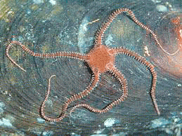

На этой глубине конечно есть рыбы,но я не смог найти их изображения
Среда: Полная темнота, высокое давление, низкие температуры.
Жизнь: На этих глубинах обитают специализированные организмы: глубоководные рыбы, ракообразные (амфиподы), офиуры и морские огурцы, способные выдерживать колоссальное давление.

Рельеф: Характерны крутые склоны, сложенные породами океанической коры, покрытые скелетными остатками планктонных организмов и тончайшей минеральной пыли, оседающей из толщи воды
Исследования: Хотя рекордные погружения (например, батискаф «Триест») направлены на отметку ~11 000 м (Бездна Челленджера), глубины 6-7 км часто проходят автоматические аппараты и сейсмические суда
наверх